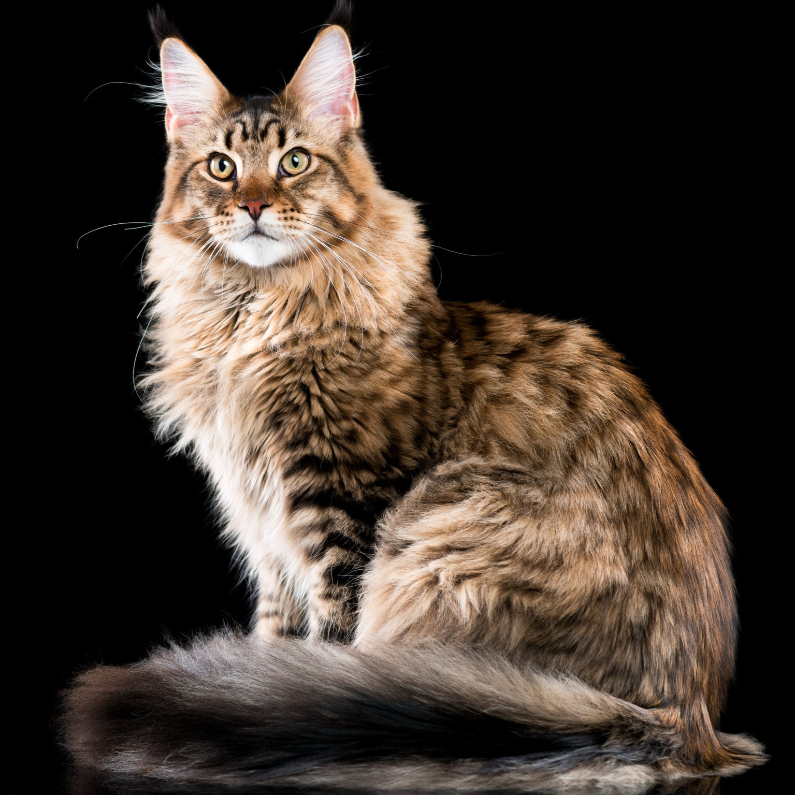

Los Gatos
Un gato es un mamífero doméstico de la familia Felidae, conocido por su naturaleza independiente, agilidad y habilidades de caza. Los gatos tienen cuerpos flexibles, garras retráctiles y ojos grandes que les permiten ver bien en condiciones de poca luz, lo que los convierte en excelentes cazadores, especialmente de pequeños roedores y aves. Existen muchas razas de gatos con una amplia variedad de colores, patrones de pelaje, y tipos de cuerpo. Son animales muy populares como mascotas debido a su carácter generalmente tranquilo, su capacidad de adaptarse a la vida en interiores y su habilidad para relacionarse con los humanos. A pesar de su independencia, muchos gatos disfrutan de la compañía de las personas y pueden llegar a ser muy cariñosos.
Lista de Razas
-
Información General
El persa es generalmente un gato de tamaño medio con huesos robustos. Puede parecer más grande de lo que es en realidad debido a su abundante cabello, es una raza distintiva.Personalidad
El persa es un gato plácido que muestra brotes de la actividad propia de un gatito. Estará durmiendo al sol y estallará de repente corriendo por la habitación y revolcándose. Se estirará a tu lado, dormirá en tu cama y se sentará en tu regazo cuando le apetezca. No le molestan los cambios de rutina y suele ser agradable con todos y todo.Convivencia
Es necesario controlar su alimentación para que se mantenga en buena forma. Dado que esta raza no tiene fama de realizar mucho ejercicio enérgico, es necesario vigilar su alimentación y asegurarse de que practique ejercicio con regularidad. Eso significa que el persa debe hacer ejercicio para mantenerse en perfecta forma física. Aunque a los persas les gusta jugar con sus propietarios y jugarán con juguetes interactivos, perseguirán pelotas y atacarán ratones de hierba gatera, eso no quita que puedas tener que insistir para que haga ejercicio a diario. Es necesario cuidar su pelo a diario. Se debe cepillar y peinar para evitar la formación de enredos. Además, hay que limpiar su cara plana con regularidad y cuidado, puesto que suele depositarse lágrimas en exceso en la cara. -
Información General
El gato siamés es una raza elegante y esbelta con un cuerpo delgado y ágil. Su pelaje es corto y liso, y destaca por sus características marcas de color en las extremidades, orejas, cara y cola, lo que le da una apariencia distintiva. A pesar de su apariencia delicada, los siameses son gatos fuertes y activos, con una constitución ligera pero robusta.Personalidad
El siamés es conocido por su personalidad extrovertida y comunicativa. Es un gato muy vocal que tiende a “hablar” con sus propietarios mediante una variedad de maullidos distintivos. Es juguetón y curioso, disfrutando de la interacción constante con sus humanos. A diferencia de algunas razas más reservadas, el siamés busca estar siempre en el centro de la acción y no duda en mostrar su afecto de manera directa. Este gato suele formar fuertes lazos con sus dueños y puede llegar a ser bastante demandante en términos de atención.Convivencia
El siamés es un gato activo que necesita estímulo mental y físico para mantenerse feliz. Disfruta de los juegos interactivos y se beneficia de juguetes que desafíen su inteligencia y agilidad. Es importante proporcionarles rascadores y trepadores para que puedan satisfacer su instinto natural de escalar y explorar. Aunque el siamés tiene un pelaje corto que requiere poco mantenimiento, es fundamental asegurar que el gato tenga suficiente actividad para evitar problemas de obesidad y estrés. En t érminos de cuidado, el siamés no presenta problemas de salud especiales relacionados con su pelaje, pero es esencial asegurarse de que esté bien hidratado y tenga una dieta equilibrada.
-
Información General
El Maine Coon es una de las razas de gatos más grandes y robustas, destacándose por su tamaño imponente y su pelaje denso y largo. Su cuerpo es musculoso y sólido, con una estructura ósea fuerte que le da una apariencia de gran presencia. El pelaje del Maine Coon es denso y se presenta en una amplia variedad de colores y patrones, lo que le confiere un aspecto majestuoso. Sus orejas son grandes y puntiagudas, a menudo adornadas con mechones de pelo, y su cola es larga y tupida, similar a la de un zorro.Personalidad
El Maine Coon es conocido por su carácter amigable y sociable. Es un gato extrovertido que se lleva bien con personas, otros gatos e incluso perros. A pesar de su tamaño imponente, es conocido por su naturaleza dulce y juguetona. Los Maine Coons son cariñosos y les gusta estar cerca de sus propietarios, a menudo siguiéndolos de habitación en habitación. Son juguetones y disfrutan de actividades interactivas, pero también tienen un lado relajado y pueden pasar largos períodos acurrucados en el regazo de sus dueños.Convivencia
Dado su tamaño y pelaje, el Maine Coon necesita espacio para moverse y un ambiente enriquecido para mantenerse feliz. Aunque su pelaje es largo y denso, no suele enredarse fácilmente, pero se recomienda cepillarlo regularmente para evitar la formación de nudos y reducir la pérdida de pelo. La rutina de cuidado debe incluir cepillados semanales y una revisión periódica para evitar enredos. Además, debido a su tamaño, es crucial proporcionarles juguetes y rascadores adecuados para que puedan hacer ejercicio y mantenerse en forma. Los Maine Coons son generalmente saludables, pero es importante estar atento a su dieta para evitar problemas de salud relacionados con la obesidad. -
Información General
El gato Bengalí es una raza distintiva y exótica, conocida por su pelaje que recuerda al de un leopardo o un puma. Su cuerpo es elegante y musculoso, con una estructura ágil y atlética. El pelaje del Bengalí es corto, denso y brillante, presentando patrones llamativos como manchas o rayas, que le dan un aspecto salvaje. Los colores varían desde el dorado hasta el plateado, pasando por el marrón y el negro. Sus ojos son grandes y expresivos, a menudo de un verde intenso o dorado, y sus orejas son de tamaño mediano, con una base ancha y redondeada.Personalidad
El Bengalí es conocido por su energía inagotable y su curiosidad natural. Es un gato extremadamente activo y juguetón, que disfruta de actividades que estimulan su mente y cuerpo. Los Bengalíes son inteligentes y les encanta explorar su entorno, por lo que es importante proporcionarles estímulos y juguetes adecuados. A pesar de su naturaleza enérgica, también pueden ser cariñosos y buscan la atención de sus propietarios. Son sociables y tienden a llevarse bien con otras mascotas y personas, aunque pueden ser un poco reservados al principio con los extraños. Su carácter juguetón y enérgico puede llevar a comportamientos traviesos, por lo que es útil tener paciencia y asegurarse de que tengan suficientes salidas para su energía.Convivencia
El Bengalí se adapta bien a diversos ambientes, pero necesita un espacio donde pueda moverse libremente y mantenerse estimulado. Su pelaje corto es relativamente fácil de cuidar, requiriendo solo un cepillado ocasional para reducir la pérdida de pelo y mantenerlo en buen estado. Sin embargo, su necesidad de ejercicio es alta, por lo que es fundamental proporcionarles oportunidades para jugar y explorar, como rascadores, árboles para gatos y juguetes interactivos. La socialización y la estimulación mental son claves para su bienestar, así que es recomendable pasar tiempo jugando con ellos y ofreciendo variedad en sus actividades diarias. En general, los Bengalíes son saludables, pero es importante vigilar su dieta para mantener un peso adecuado y prevenir problemas relacionados con la obesidad.